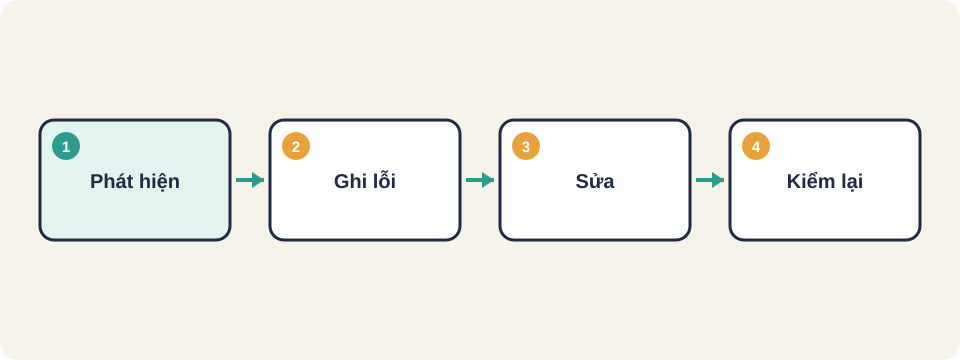
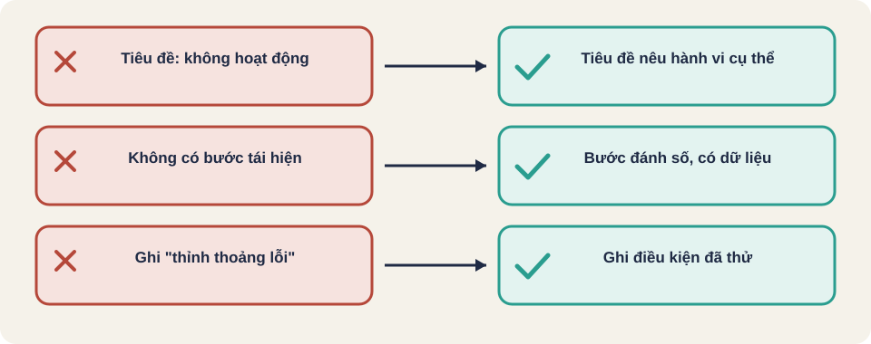

Hình vẽ gốc, dùng để minh họa thứ tự các bước chính của bài.
Một báo cáo lỗi tốt có các bước tái hiện, kết quả thực tế và kết quả mong đợi. Lỗi đi qua các trạng thái rõ ràng.

Hình vẽ gốc, dùng để minh họa thứ tự các bước chính của bài.
Nghiêm trọng: lỗi gây hậu quả gì (mất dữ liệu, sai tiền, chỉ lệch giao diện).
Ưu tiên: nên sửa trước lúc nào. Lỗi nhẹ nhưng ở trang chính vẫn có thể cần sửa gấp.
Mới → Đang xem → Đang sửa → Chờ kiểm → Đã đóng
↘ Không tái hiện được → Đóng
↘ Không phải lỗi → ĐóngNgười kiểm thử xác nhận lại sau khi sửa, không đóng lỗi chỉ vì người sửa báo đã xong.
Thuật ngữ trong slide này: Tái hiện (reproduce): Làm lại đúng các bước để lỗi xuất hiện lần nữa.
Chưa tốt: "Hàm giảm giá bị sai."
Tốt: "Giảm giá 100000 đồng cho ra 100000 thay vì 90000. Bước: nhập gia = 100000, bấm Tính. Mong đợi: 90000."
Viết lại báo cáo sau cho đủ ý: "Đăng nhập bị lỗi, bấm nút là văng ra."
Một phiên bản tốt cần: người dùng nào, đăng nhập bằng gì, bấm nút nào, lỗi hiện gì, kết quả mong đợi là gì, trên trình duyệt và phiên bản nào. Điền đủ các mục này thì người sửa mới làm được.
| Trường | Nội dung tốt |
|---|---|
| Tiêu đề | Hành vi sai, cụ thể: "Nút Thanh toán bị trừ tiền hai lần khi bấm nhanh" |
| Môi trường | Phiên bản, trình duyệt, hệ điều hành, tài khoản dùng thử |
| Các bước tái hiện | Đánh số, mỗi bước một hành động, có dữ liệu cụ thể |
| Kết quả thực tế | Điều xảy ra, kèm ảnh hoặc log |
| Kết quả mong đợi | Điều đúng theo yêu cầu, trích tài liệu nếu có |
| Mức độ nghiêm trọng | Ảnh hưởng đến người dùng và dữ liệu |
| Mức ưu tiên | Thứ tự cần sửa, do chủ sản phẩm quyết định |
Kiến thức chung, chưa đối chiếu nguồn gốc.
Thuật ngữ trong slide này: Mức độ nghiêm trọng (severity): Mức ảnh hưởng của lỗi đến người dùng và dữ liệu. Tester thường đề xuất. · Mức ưu tiên (priority): Thứ tự cần sửa trước sau, theo kế hoạch và bối cảnh kinh doanh. Chủ sản phẩm quyết định. · Tái hiện (reproduce): Làm lại đúng các bước để lỗi xuất hiện lần nữa.
Mức độ nghiêm trọng (severity) do tester đề xuất theo ảnh hưởng kỹ thuật. Mức ưu tiên (priority) do chủ sản phẩm quyết định theo kế hoạch. Một lỗi nhỏ về kỹ thuật có thể có ưu tiên cao nếu nó xuất hiện trước buổi ra mắt.
Kiến thức chung, chưa đối chiếu nguồn gốc.
Thuật ngữ trong slide này: Mức độ nghiêm trọng (severity): Mức ảnh hưởng của lỗi đến người dùng và dữ liệu. Tester thường đề xuất. · Mức ưu tiên (priority): Thứ tự cần sửa trước sau, theo kế hoạch và bối cảnh kinh doanh. Chủ sản phẩm quyết định.
Kiến thức chung, chưa đối chiếu nguồn gốc.
Thuật ngữ trong slide này: Tái hiện (reproduce): Làm lại đúng các bước để lỗi xuất hiện lần nữa.
Tiêu đề: Giỏ hàng cộng dồn số lượng khi tải lại trang
Môi trường: Chrome 124, Windows 11, tài khoản test01
Bước:
1. Thêm sản phẩm A vào giỏ (số lượng 1)
2. Tải lại trang (F5)
3. Quan sát số lượng sản phẩm A
Thực tế: số lượng là 2
Mong đợi: số lượng vẫn là 1
Mức độ: nghiêm trọng vừa, ảnh hưởng tiền thanh toán
Bằng chứng: ảnh giỏ hàng trước và sauViết lại tiêu đề sau cho đúng chuẩn: "Lỗi nút không hoạt động". Gợi ý: nêu nút nào, hoạt động gì, trong hoàn cảnh nào.

Thuật ngữ trong slide này: Tái hiện (reproduce): Làm lại đúng các bước để lỗi xuất hiện lần nữa.
Mức độ nghiêm trọng (severity)
Mức ưu tiên (priority)
Tái hiện (reproduce)
Trạng thái lỗi (defect life cycle)
Thuật ngữ trong slide này: Tái hiện (reproduce): Làm lại đúng các bước để lỗi xuất hiện lần nữa.
Người đọc báo cáo không có mặt lúc bạn gặp lỗi. Báo cáo phải đủ để họ làm lại đúng các bước.
Báo cáo ban đầu: "Đặt hàng bị lỗi."
| Trạng thái | Ai chuyển | Khi nào |
|---|---|---|
| Open (mở) | Tester | Tester phát hiện và ghi nhận lỗi |
| Assigned (đã gán) | Trưởng nhóm dev | Lỗi hợp lệ, gán cho developer |
| Work in progress (đang sửa) | Developer | Đang sửa lỗi |
| Resolved / Retest (đã sửa, chờ kiểm) | Developer | Đã sửa, chuyển sang tester |
| Closed (đóng) | Tester | Kiểm lại xác nhận đã sửa |
| Reopened (mở lại) | Tester | Kiểm lại, lỗi vẫn còn |
Nguồn: Udemy Blog, "Defect Life Cycle" [đã đọc]. Tên trạng thái khác nhau giữa các dự án, nên ghi trong test plan.
Thuật ngữ trong slide này: Trạng thái lỗi (defect life cycle): Chuỗi trạng thái của một lỗi từ lúc mở đến lúc đóng.
| Trạng thái | Ý nghĩa |
|---|---|
| Non-reproducible (không tái hiện được) | Developer không lặp lại được theo bước đã ghi |
| Not enough info (thiếu thông tin) | Trả về tester để bổ sung bước và dữ liệu |
| Duplicate (trùng) | Lỗi đã có ghi nhận trước đó |
| Not a bug / Working as intended | Hành vi đúng theo thiết kế, đóng lỗi |
| Deferred (hoãn) | Lỗi hợp lệ, làm ở bản sau |
Nguồn: Udemy Blog [đã đọc].
Thuật ngữ trong slide này: Tái hiện (reproduce): Làm lại đúng các bước để lỗi xuất hiện lần nữa.
Diễn giả James Bach nói tester phải kể câu chuyện về việc kiểm thử, dùng ngôn từ chuyên môn, và biến những việc tưởng như chơi đùa thành báo cáo có cấu trúc. Một báo cáo lỗi tốt cho người đọc tái hiện được lỗi mà không cần hỏi lại.
Nguồn: James Bach, Open Lecture on Software Testing (YouTube ILkT_HV9DVU), phụ đề tự động. Quan điểm của diễn giả.
Thuật ngữ trong slide này: Tái hiện (reproduce): Làm lại đúng các bước để lỗi xuất hiện lần nữa.
Nguồn: github.com/PaulWaltersDev/FreeLearningResourcesForSoftwareTesters, mục "Defect Lifecycle Management". Tìm tên tài liệu trong repo để lấy liên kết.
Thuật ngữ trong slide này: Trạng thái lỗi (defect life cycle): Chuỗi trạng thái của một lỗi từ lúc mở đến lúc đóng.